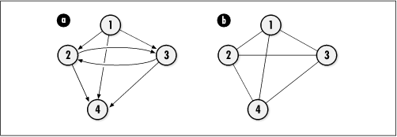
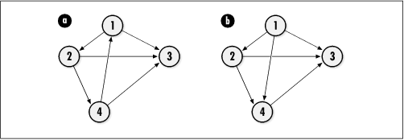
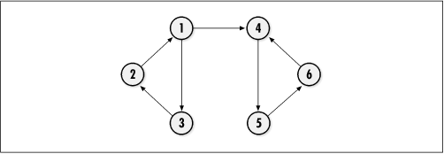
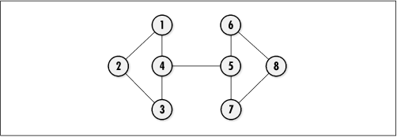
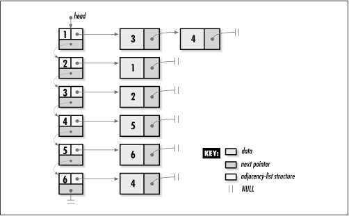
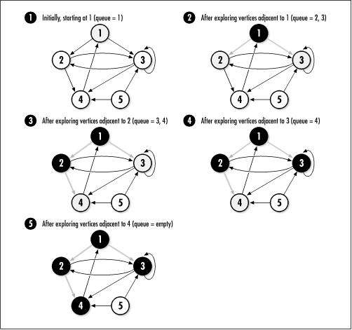
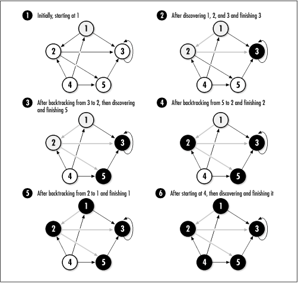

11.1 Description of Graphs
Graphs are
composed of two types of elements: vertices and edges. Vertices represent
objects, and edges establish relationships or connections
between the objects. In many problems, values, or weights, are associated with a
graph's edges; however, such problems will not be considered
further until Chapter
16.
Graphs may be either directed or undirected
. In a directed graph, edges go from one
vertex to another in a specific direction. Pictorially, a
directed graph is drawn with circles for its vertices and
arrows for its edges (see Figure
11.1a). Sometimes the edges of a directed graph are
referred to as arcs. In an undirected graph, edges have no
direction; thus, its edges are depicted using lines instead of
arrows (see Figure
11.1b).

Formally, a graph is a pair G = (V, E
), where V is a set of
vertices and E is a binary
relation on V. In a directed
graph, if an edge goes from vertex u to vertex v, E
contains the ordered pair (u,
v). For example, in Figure
11.1a, V = {1, 2, 3, 4} and
E = {(1, 2), (1, 3), (1, 4),
(2, 3), (2, 4), (3, 2), (3, 4)}. By convention, parentheses
are used instead of braces for sets that represent edges in a
graph. In an undirected graph, because an edge (u, v)
is the same as (v, u), either edge is listed in E, but not both. Thus, in Figure
11.1b, V = {1, 2, 3, 4} and
E = {(1, 2), (1, 3), (1, 4),
(2, 3), (2, 4), (3, 4)}. Edges may point back to the same
vertex in a directed graph, but not in an undirected
graph.
Two important
relations in graphs are adjacency
and incidence. Adjacency is a relation between two
vertices. If a graph contains the edge (u, v),
vertex v is said to be adjacent to vertex u. In an undirected graph, this
implies that vertex u is also
adjacent to vertex v. In other
words, the adjacency relation is symmetric in an undirected graph.
This is not necessarily true in a directed graph. For example,
in Figure
11.1a, vertex 2 is adjacent to vertex 1, but vertex 1 is
not adjacent to vertex 2. On the other hand, vertices 2 and 3
are adjacent to each other. A graph in which every vertex is
adjacent to each other is called complete.
Incidence is a
relation between a vertex and an edge. In a directed graph,
the edge (u, v) is incident from or leaves vertex u and is incident to or enters vertex v. Thus, in Figure
11.1a, edge (1, 2) is incident from vertex 1 and incident
to vertex 2. In a directed graph, the in-degree of a vertex is the number of edges
incident to it. Its out-degree
is the number of edges incident from it. In an undirected
graph, the edge (u, v) is incident on vertices u and v. In an undirected graph, the degree of a vertex is the number of
edges incident on it.
Often one talks about paths in a graph. A path is a
sequence of vertices traversed by following the edges between
them. Formally, a path from one vertex u to another vertex u ' is a sequence of vertices 〈v0, v1, v2, . . ., vk 〉 in which u = v0 and u ' = vk , and all (vi - 1, vi ) are in E for i = 1, 2, . . ., k. Such a path contains the edges
(v0, v1), (v1, v2), . . ., (vk - 1, vk ) and has a length of k. If a path exists from u to u
', u ' is reachable from u. A path is simple if it has no repeated
vertices.
A cycle
is a path that includes the same vertex two or more times.
That is, in a directed graph, a path is a cycle if one of its
edges leaves a vertex and another enters it. Thus, Figure
11.2a contains the cycle {1, 2, 4, 1}. Formally, in a
directed graph, a path forms a cycle if v0 = vk and the path contains at least one
edge. In an undirected graph, a path 〈v0, v1, v2, ..., vk 〉 forms a cycle if v0 = vk and no vertices are repeated from
v1 to vk . Graphs without cycles are acyclic. Directed acyclic graphs are given the
special name dag (see Figure
11.2b).
Connectivity is
another important concept in graphs. An undirected graph is
connected if every vertex is reachable from each
other by following some path. If this is true in a directed
graph, we say the graph is strongly
connected . Although an
undirected graph may not be connected, it still may contain
certain sections that are connected, called connected components . If only
parts of a directed graph are strongly connected, the parts
are strongly connected
components (see Figure
11.3).
Certain vertices have special significance in
keeping a graph or connected component connected. If removing
a vertex disconnects a graph or component, the vertex is an
articulation point . For example,
in Figure
11.4, vertices 4 and 5 are articulation points because if
either of them is removed, the graph becomes disconnected.
Upon removing these vertices, the graph has two connected
components, {1, 2, 3} and {6, 7, 8}. Any edge whose removal
disconnects a graph is called a bridge. A
connected graph with no articulation points is biconnected. Although a graph may not be
biconnected, it still may contain biconnected components.



The most common way to represent a graph in a
computer is using an adjacency-list
representation. This consists of a linked list of
adjacency-list structures. Each structure in the list contains
two members: a vertex and a list of vertices adjacent to the
vertex (see Figure
11.5).
In a graph G =
(V, E ), if two vertices u and v in V
form an edge (u, v) in E, vertex v is included in the adjacency list
of vertex u. Thus, in a
directed graph, the total number of vertices in all adjacency
lists is the same as the total number of edges. In an
undirected graph, since an edge (u, v)
implies an edge (v, u), vertex v is included in the adjacency list
of vertex u, and vertex u is included in the adjacency list
of vertex v. Thus, the total
number of vertices in all adjacency lists in this case is
twice the total number of edges.

Typically, adjacency lists are used for
graphs that are sparse, that
is, graphs in which the number of
edges is less than the number of vertices squared. Sparse graphs are common. However, if a
graph is dense , we may
choose to represent it using an adjacency-matrix representation (see the
related topics at the end of the chapter). Adjacency-matrix
representations require O
(VE ) space.
11.1.1 Search Methods
Searching a
graph means visiting its vertices one at a time in a specific
order. There are two important search methods from which many
important graph algorithms are derived: breadth-first search and depth-first search.
11.1.1.1 Breadth-first search
Breadth-first
search (see Figure
11.6) explores a graph by visiting all vertices adjacent
to a vertex before exploring the graph further. This search is
useful in a number of applications, including finding minimum
spanning trees and shortest paths (see Chapter
16 and the first example in this chapter).

To begin, we select a start vertex and color
it gray. We color all other vertices in the graph white. The
start vertex is also placed alone in a queue. The algorithm
then proceeds as follows: for each vertex in the queue
(initially only the start vertex), we peek at the vertex at
the front of the queue and explore each vertex adjacent to it.
As each adjacent vertex is explored, its color will be white
if it has not been discovered yet. In this case, we color the
vertex gray, indicating it has been discovered, and enqueue it
at the end of the queue. If its color is not white, it has
already been discovered, and the search proceeds to the next
adjacent vertex.
Once all adjacent vertices have been
explored, we dequeue the vertex at the front of the queue and
color it black, indicating we are finished with it. We
continue this process until the queue is empty, at which point
all vertices reachable from the start vertex are black. Figure
11.6 illustrates breadth-first search with a directed
graph. Breadth-first search works with undirected graphs as
well.
In addition to simply visiting vertices,
breadth-first search can be used to keep track of useful
information. For example, we can record the number of vertices
traversed before reaching each vertex, which turns out to be
the shortest path to each vertex in graphs whose edges are not
weighted. In Figure
11.6, the shortest path from vertex 1 to either vertex 2
or 3 consists of one hop, recorded when we first discover
vertex 2 and 3. The shortest path from vertex 1 to vertex 4
consists of two hops: one hop is recorded as we discover
vertex 2 from 1, and another is recorded when we discover
vertex 4 from 2. We can also use breadth-first search to
generate a breadth-first tree. A breadth-first tree is the tree
formed by maintaining the predecessor of each vertex as we
discover it. Since a vertex is discovered only once (when we
color it gray), it has exactly one predecessor, or parent. In
Figure
11.6, the edges highlighted in gray are branches of the
tree.
11.1.1.2 Depth-first search
Depth-first search (see Figure
11.7) explores a graph by first visiting undiscovered
vertices adjacent to the vertex most recently discovered.
Thus, the search continually tries to explore as deep as it
can. This makes depth-first search useful in a number of
applications, including cycle detection and topological
sorting (see the second example in this chapter).
To begin, we color every vertex white and
select a vertex at which to start. The algorithm then proceeds
as follows: first, we color the selected vertex gray to
indicate it has been discovered. Then, we select a new vertex
from the set of undiscovered vertices adjacent to it, which
are white, and repeat the process. When there are no white
vertices adjacent to the currently selected vertex, we have
searched as deep as possible. Thus, we color the currently
selected vertex black to indicate that we are finished with
it, and we backtrack to explore the white vertices adjacent to
the previously selected vertex.
We continue this process until the vertex we
selected as the start vertex has no more white vertices
adjacent to it. This process visits only the vertices
reachable from the vertex at which we start. Therefore, the
entire process must be repeated for each vertex in the graph.
For example, in Figure
11.7, vertex 4 would not get visited without this step.
When we restart at a vertex that is already black, the search
stops immediately, and we move on to the next vertex. Figure
11.7 illustrates depth-first search with a directed graph.
Depth-first search works with undirected graphs as well.
In addition to simply visiting vertices, a
depth-first search can be used to keep track of some useful
information. For example, we can record the times at which
each vertex is discovered and finished. Depth-first search
also can be used to produce a depth-first forest. A depth-first forest is a set of
trees, each formed by maintaining the predecessor of each
vertex as it is discovered. Since a vertex is discovered only
once (when we color it gray), it has exactly one predecessor,
or parent. Each tree contains the vertices discovered in
searching exactly one connected component. In Figure
11.7, the edges highlighted in gray are branches in the
trees.

|